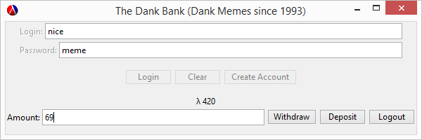
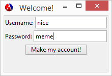

Authors
Tyler Alterio
Mike Overy
Matt Wolf
Overview
The Dank Bank: A banking application using cryptography to store your precious memes and lambdas
Screenshots
 
Concepts Demonstrated
Identify the OPL concepts demonstrated in your project. Be brief. A simple list and example is sufficient.
- Object Oriented Programming was used to implement the bank account class which holds user info and account balance, and provides ways of withdrawing and depositing money.
- Password ciphertext is computed using ascii characters stored in recursive data structures
External Technology and Libraries
- We used the racket GUI library to create the GUI for the application.
- A SQL database is used to store each user's info persistently
- Ascii character encoding manipulation was used for password processing
Favorite Lines of Code
Matt (a team member)
My favorite lines of code are the Vigenere cipher text generating function. The keylist defined generates a keylist from the keyword which matches the length of the password. The function body uses map and foldr to apply the vigenere cipher to concisely apply the vigenere cipher with the keylist to the password, and convert the resulting cipher text back to a string.
(define (vigenere-cipher password keyword method)
(define (folder-proc a b result)
(cons (shift a b method) result))
(define keylist (gen-v-key (string-length password) keyword))
(list->string (map chr (foldr folder-proc '() (map ord (string->list password)) keylist))))Tyler
Favorite line of code was naming the main window "dank memes since 1993."
Mike
Favorite line of code was when we print "you dropped your lambdas!" on overflow
How to Download and Run
clone the repo, open BankClient.rkt in Dr. Racket and run.